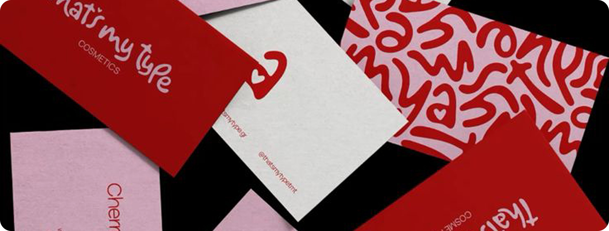

Samantha Peschko
Turning ideas into impactful visuals through branding and digital design. Minimalist by choice, bold by instinct. Coffee addict, travel junkie, and typography nerd. Let's create, not decorate.

Whether you're rebranding, launching a startup, or simply need a creative partner who gets it—let's chat. I'm here to turn your "what ifs" into "wow." Explore my portfolio or reach out to start your design journey.